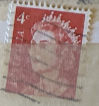
| SOURCE | TITLE| IMAGE MATCH | click to source page |
| eBay | Used stamp imperforate at left and below Queen Elizabeth II 1966 Australia avdpz | eBay | 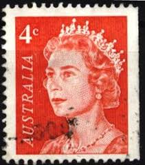 |
| eBay | Australia Queen Stamp 1967 for sale | eBay | 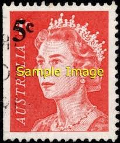 |
| Alamy | Queen elizabeth stamp 1966 hi-res stock photography and images - Alamy | 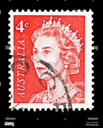 |
| Alamy | United kingdom postage stamp 1p hi-res stock photography and images - Alamy | 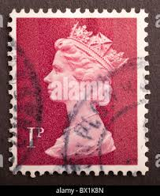 |
| Shutterstock | Ankaratürkiye -05142023 Cancelled Postage Stamp Printed Stock Photo 2303144561 | Shutterstock | 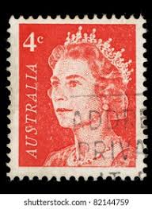 |
| Alamy | AUSTRALIA - CIRCA 1966: A used postage stamp from Australia, depicting an illustration of Explorer William Dampier, circa 1966 Stock Photo - Alamy | 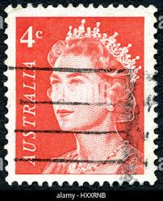 |
| Alamy | Great Britain Postage Stamp - Pre-decimal Queen Elizabeth II Stock Photo - Alamy | 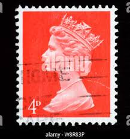 |
| eBay | 4d Denomination Great Britain Elizabeth II Pre-Decimal Stamps (1952-1971) for sale | eBay | 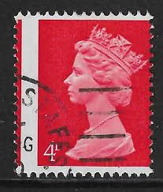 |
| Alamy | Postage stamp from Australia in the Queen Elizabeth II series issued in 1966 Stock Photo - Alamy | 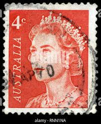 |
| Check Inn Systems For over 18 years, Check Inn Systems has been committed to providing specialised high security automated check in kiosks, key safes, keyless lock systems and more. Specialising in premium | 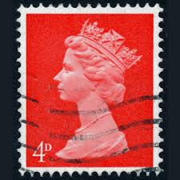 | |
| Alamy | perfin - perforated initials 'C.S' on Queen Elizabeth II 4d postage stamp Stock Photo - Alamy | 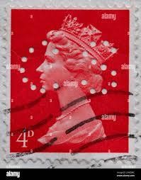 |
| HipStamp | Australia 1966 Sc#397, SG#385 4c Red Queen Elizabeth II USED | Australia & Oceania - Australia, General Issue Stamp / HipStamp | 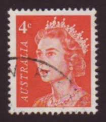 |
| HipStamp | Great Britain, Scott #MH155, used(o), 1989 Machin: Queen Elizabeth II, 37p, red | Great Britain, Back of Book (Other) - Machin Head Stamp / HipStamp | 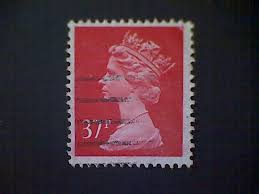 |
| Collect GB Stamps | High Value Definitive (1970) : Collect GB Stamps | 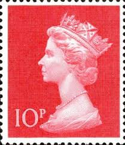 |
| eBay | Stamp Australia SG385 1966 4c Queen Elizabeth II Used | eBay | 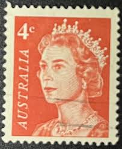 |
| Shutterstock | Uk Circa 2011 British Stamp Her Stock Photo 2687623765 | Shutterstock | 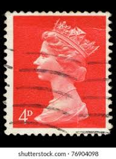 |
| Dreamstime.com | Machin Definitive Stamps of Great Britain on Paper Editorial Stock Image - Image of crown, cancelled: 166255274 | 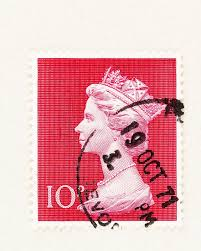 |
| It's Nice That | Homeground visualises the Lionesses style on the pitch as completely made-up products | 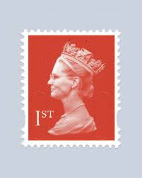 |
| Shutterstock | 4+ Thousand Australian Vintage Postage Stamp Royalty-Free Images, Stock Photos & Pictures | Shutterstock | 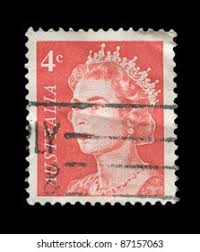 |
| Alamy | Queen elizabeth stamp hi-res stock photography and images - Page 16 - Alamy | 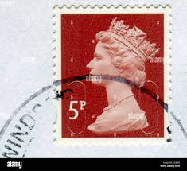 |
| Shutterstock | Istanbul Turkey January 02 2021 Great Stock Photo 2630198727 | Shutterstock | 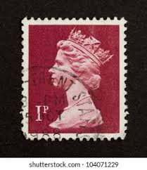 |
| Wikimedia.org | File:Stamp 1967 Australia MiNr0392Er pm B002.jpg - Wikimedia Commons | 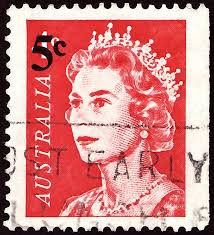 |
| Alamy | Scottish Used Postage Stamp showing Portrait of Queen Elizabeth 2nd, circa 1958 to 1970 Stock Photo - Alamy | 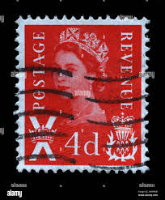 |
| HipStamp | Australia QEII Orange 6c 1 (AP121042) | Australia & Oceania - Australia, Stamp / HipStamp | 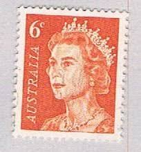 |
| Alamy | Postmark uk hi-res stock photography and images - Page 3 - Alamy | 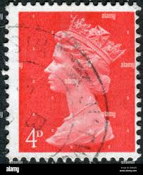 |
| eBay | Great Britain - 1969 - Queen Elizabeth II - New Colors - 4D - Used - #03 | eBay | 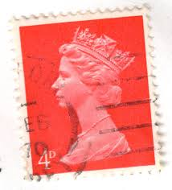 |
| Alamy | Great Britain Postage Stamp - Queen Elizabeth II - Large Machin Stock Photo - Alamy | 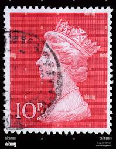 |
| Barkened | FIRST CLASS STAMP FOR BARKENED TO SEND CARDS – Barkened | 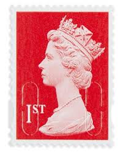 |
| Shutterstock | Queen Post: Over 11,038 Royalty-Free Licensable Stock Photos | Shutterstock | 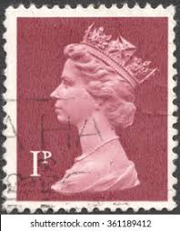 |
| eBay | Mint Never Hinged/MNH Orange British Elizabeth II Stamps for sale | eBay | 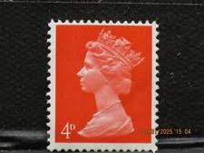 |
| Getty Images | In this photo illustration first class postage stamps are displayed... News Photo - Getty Images | 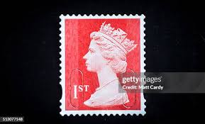 |
| vividagallery.com | United Kingdom Queen Elizabeth Machin Crimson Red Royal Profile Jigsaw Puzzle by Vivida Gallery - Vivida Gallery | 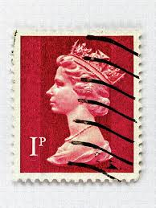 |
| eBay | Great Britain - 2013 - 1st - Queen Elizabeth II - #18255 | eBay | 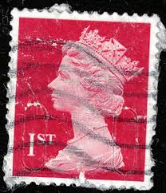 |
| Stamp Community Forum | Need Some Help With Machin's Block Of 4 - Stamp Community Forum | 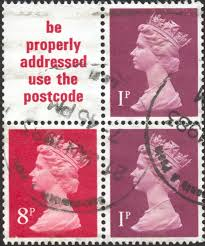 |
| Shutterstock | London Uk June 13 2010 Vintage Stock Photo 429223120 | Shutterstock | 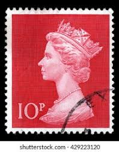 |
| Australian Stamp Catalogue | http://www.australianstrampcatalogue.com | 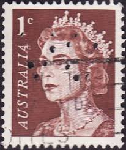 |
| Shutterstock | 72 Pink Queen Postal Stamp Royalty-Free Images, Stock Photos & Pictures | Shutterstock | 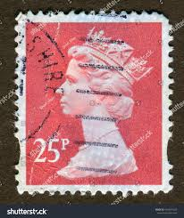 |
| Alamy | Machin stamp hi-res stock photography and images - Alamy | 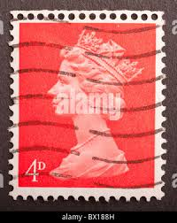 |
| Shutterstock | 6 1971h Royalty-Free Images, Stock Photos & Pictures | Shutterstock | 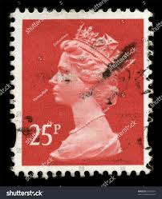 |
| eBay UK | 1 Stamp 1 Stamp Used Great Britain Elizabeth II Machin Definitive Stamps for sale | eBay UK | 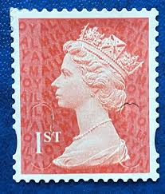 |
| Alamy | Queen stamp uk hi-res stock photography and images - Alamy | 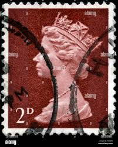 |
| Dreamstime.com | A Vintage Queen Elizabeth II Postage Stamp from Great Britain. Editorial Photo - Illustration of penny, engraved: 330177336 | 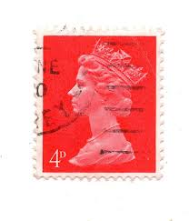 |
| Shutterstock | 4+ Hundred Queen Elizabeth Ii Sovereign Royalty-Free Images, Stock Photos & Pictures | Shutterstock | 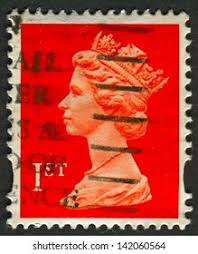 |
| norphil.co.uk | Norvic Philatelics Blog: List of Machin definitives issued, released, or discovered so far in 2020 | 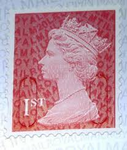 |
| Wikipedia | Machin series - Wikipedia | 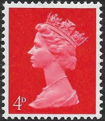 |
| HipStamp | Great Britain, Scott #MH426, 2021, used, Machin, 1st, dark red (M21L/MTIL) | Great Britain, Back of Book (Other) - Machin Head Stamp / HipStamp | 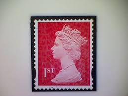 |
| HipStamp | GB 1st Class Security Machin FORGERY see details & scan | Great Britain, General Issue Stamp / HipStamp | 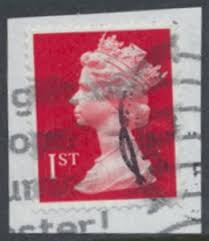 |
| eBay | GB Machin Definitive Garnet Red £1.42 M20L cylinder tab single W1 MNH 2020 | eBay | 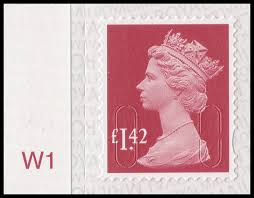 |
| eBay UK | phosphor omitted products for sale | eBay UK | 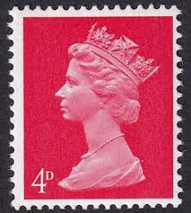 |
| norphil.co.uk | Norvic Philatelics Blog: Spot the difference - Potter booklet brings some magic | |
| eBay | GB 2013 QE2 1st Vermilion Security Machin SG U3025 ( MTIL) ( B619 ) | eBay | |
| eBay | GB Machin Definitive Garnet Red Walsall £2.55 M20L single MNH 2021 | eBay | |
| Alamy | United Kingdom Postage Stamp 2d, Machin Stock Photo - Alamy | |
| Teacher's Collection 36 Self-Inking Stamps WAS £35 NOW £20 + Get FREE Item with Code… Comes with stamps including Nice Work, Very Good, Well Done and more. Also Use Code: BOGOF at | ||
| tsfimagehost.net | alanl - The Stamp Forum Image Host | |
| eBay | Australia, Scott 397--Elizabeth II--1966-71 | eBay | |
| Windsor Stamps | Eliptical Y1667-Y1706 | GB Stamps | Windsor Stamps | |
| Alamy | Postage stamp great britain queen hi-res stock photography and images - Alamy | |
| Encyclopaedia Philatelica | Letter M - Encyclopaedia Philatelica | |
| eBay | Great Britain - 2013 - 1st - Queen Elizabeth II - #18258 | eBay |
{kind=link}